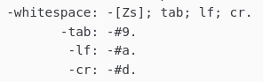
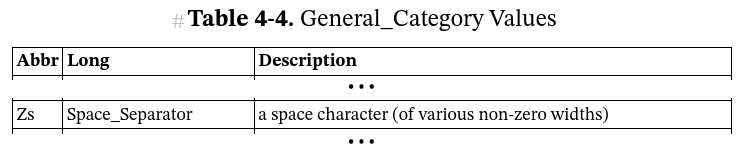
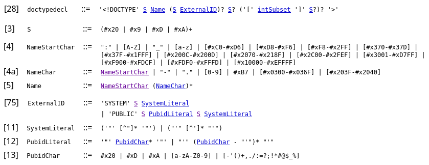

Initially, the errors were caused by a fairly equal mix of syntax errors in my grammar, eg. forgetting to add a full-stop at the end of each rule, and incomplete grammar rules. On the syntax errors front, I resolved this with a more throrough reading of the iXML spec and comparing other iXML grammars with each other, as well as my own. The incomplete grammar rules were inevitable as I was testing it before it was complete.
Whitespace was a problem. Michael Sperberg-McQueen wrote about this in 2023, in his paper on Keyboarding Frege's concept writing[CMS2023]:
The handling of whitespace is one of the trickiest and least expected problems confronted by the writer of invisible-XML grammars. Even those with long experience using and writing context-free grammars may be tripped up by it, partly because most practical tools for parser generation assume an upstream lexical analyser or tokenizer which can handle whitespace rules, and most published context-free grammars accordingly omit all mention of whitespace. Because ixml does not assume any upstream lexical analyser, whitespace must be handled by the grammar writer. If care is not taken, then either whitespace will not be allowed in places where it should be allowed, or it will be allowed by multiple rules, introducing ambiguity into the grammar. (In this case, the ambiguity is usually harmless, since the position of whitespace seldom affects the intended meaning of the input. But there is no way for the parser to know when ambiguity is harmless, so it will warn the user.) On the other hand, if care is taken, then whitespace handling can begin to consume all too much of the grammar writer’s thoughts. | ||
| --Michael Sperberg-McQueen | ||
That was exactly my experience: finding that whitespace wasn't allowed where it should and then was allowed where it shouldn't. Similarly, before I started writing the grammar, I hadn't really thought about the source including content I might want to drop, for example, delimiters and other punctuation. However, with each new scenario I discovered, I was able to create a new test and if the fix for this new problem unintentionally broke a scenario that was previously working, I knew about it straight away.
Another white-space challenge was understanding what Zs is shorthand for. Although it is referenced in the iXML grammar, it's not also defined there, unlike tab, lf and cr which are all defined as well as referenced (see Figure 10, “iXML definition of whitespace, including Zs”.
Figure 10. iXML definition of whitespace, including Zs
|  |
However, the iXML specification mentions Unicode character classes and, sure enough, Zs is defined in Table 4.4 of the Character Properties chapter of the core specification of the Unicode Standard[UNIGEN] (see figure 11). This isn’t the only Unicode character class code that’s used in the iXML spec so, unless you’re familiar with them all, you may also find this table useful.
Figure 11. Excerpt from the Unicode Standard showing the definition of Zs
|  |
As I got towards the end of writing my grammar and I started to try to make sure that it exactly implemented the rules for a DOCTYPE declaration, as defined for XML 1.0 (fifth edition)[XML1-0] and 1.1[XML1-1] (the rules are the same in both specs).
Figure 12. Excerpts from the XML 1.0 Specification showing the rules for a DOCTYPE declaration
|  |
I copied the character ranges from the XML spec and pasted them into my iXML grammar but when I tested the changes, an error was thrown, complaining that character #EFFFF wasn’t allowed. A quick search revealed that #EFFFF is one of 66 Unicode code points confusingly labelled Noncharacter[WIKINON][UNINON][UNIGEN]. This prompted me to post a question in the xml.com space on Slack.com. The conversation this triggered is now lost because messages in that Space are hidden after 90 days (I should have, instead, emailed the question to the iXML mailing list where the discussion would have been preserved) however the kind people of XML Slack helped me understand that:
the problematic character was in the rule for a Name Start Character
the iXML definition for a Name Start Character isn't the same as the XML definition for Name Start Character
This isn't the only difference between iXML and XML when it comes to names and the archive for the iXML mailing list includes quite a long discussion about this[CHARDISCUSS]. Norm Tovey-Walsh has also investigated the differences and documented his detailed findings and some history in Understanding (i)XML names[IXMLNAMES]. My temporary workaround was to fallback to using the more restrictive iXML definition: -xml-name-start-character: ["_"; L].
Another whitespace-related challenge manifested when I configured CoffeePot to pretty print the XML output and XSpec started failing my tests because of whitespace differences. I had already updated the expected result so that it was also pretty printed and the actual result looked identical in the side-by-side diff but on closer examination I discovered that CoffeePot was indenting with spaces, whereas I had used tabs to indent the expected result. The samples are much easier to work with if pretty printed, so I didn’t want to remove the indentation but as I believe that tabs are superior to spaces (#religious-war), I wasn’t about to change the settings in my text editor to replace tabs with spaces and the odds were low that I would remember to use spaces instead of tabs in just those files. Instead, I created an XSLT identity transform that strips whitespace and added it to my XSpec file as a helper.
The final noteworthy test failure was also XSpec related. Both x:context and x:expect were set to source their content from external files (@href), with no select attribute. And it looked as though the result matched the expected, but the tests were failing because the result was an element() but expected was a document-node(). My workaround for this was to set each of the expects to select the root element(), instead of the document-node().